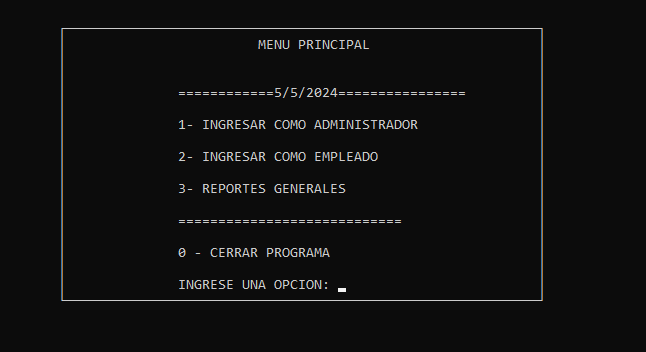
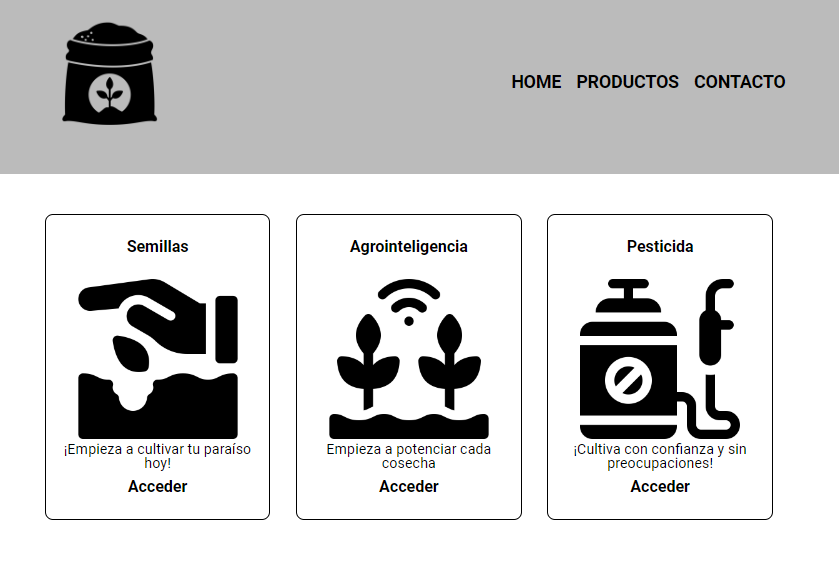
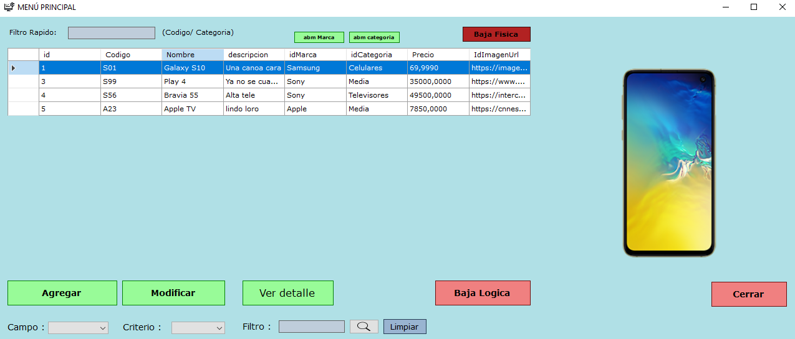

Andres Esteban Benitez
Bienvenido a mi portafolio! Soy Andres. En este espacio, vas a poder explorar mi trabajo y descubrir cómo mis habilidades pueden agregar valor a tus ideas y proyectos
SOBRE MI
Soy estudiante de la Tecnicatura en Programación en la Universidad Tecnológica Nacional (FRGP) y vivo en Buenos Aires, Argentina. Actualmente estoy realizando una pasantía en Ema Servicios, en el área de verificación de medidores. En mis tiempos libres, trabajo en mantenimiento de parques. Tambien sigo ampliando mis conocimientos en programación mediante cursos para aprender otros lenguajes y tecnologías.
SKILLS
 |
 |
 |
 |
 |
PROYECTOS
-
SimuMesa
Utilizando archivos en C++, SimuMesa simplifica el almacenamiento y la recuperación de datos importantes del restaurante, como menús, horarios de reserva y registros de pedidos. Esto asegura una gestión confiable y segura de la información, lo que permite a los propietarios de restaurantes acceder y modificar fácilmente los datos necesarios para optimizar sus operaciones.
-
PlantasSabias
Plantas Sabias es un proyecto de aprendizaje y comercio diseñado en HTML y CSS. Este sitio web ofrece una plataforma educativa sobre jardinería. Además, ofrece una selección de productos para el cuidado de las plantas y herramientas de jardinería.
-
Gestión de artículos
Es una aplicación de escritorio desarrollada utilizando C#, SQL Server y .NET Framework. Esta aplicación , proporciona una herramienta para optimizar sus operaciones de gestión de inventario y mejorar la eficiencia en el manejo de sus productos.